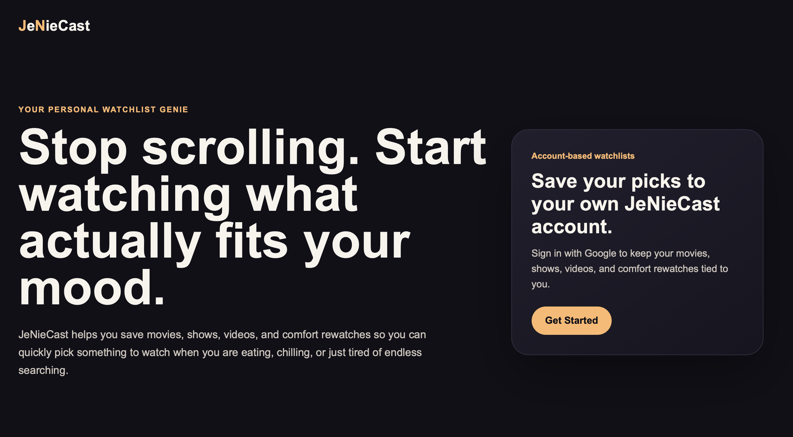

JeNieCast
An account-based watchlist app for saving movies, shows, videos, anime, documentaries, and comfort rewatches.
What I Built
- Built Google sign-in with Supabase Auth and protected pages for signed-in users.
- Created dashboard, vault, and add-watch flows for managing personal watch items.
- Added search, filtering, sorting, import, and export tools for saved collections.
- Connected saved items to user accounts with Supabase-backed data storage.